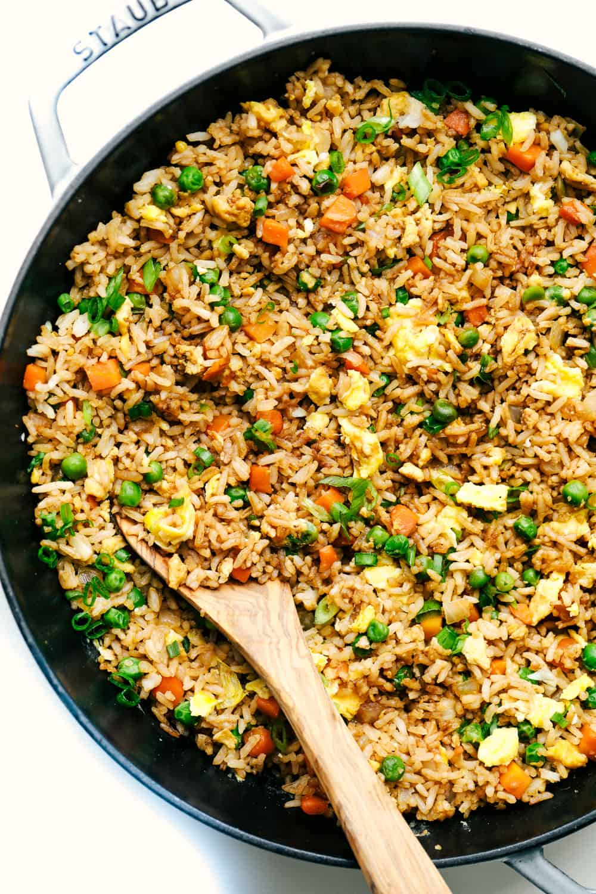

Fried Rice

Best way to use leftover rice
Ingredients
- Leftover/cold rice
- Soy Sauce
- Oyster Sauce
- MSG
- 2 Eggs
- Cubed Chinese Sausage
- Frozen Mixed Vegetables (peas, carrots, corn)
- Small Sliced Onion
- *Cooking oil*
How to prepare
- Heat pan and oil over medium heat.
- Crack eggs and scramble.
- Add frozen vegetables, onion, and chinese sausage and cook until heated through.
- Add rice.
- Combine and cook through, then lower heat to medium low.
- Add sauces.
- Combine everything. Enjoy.